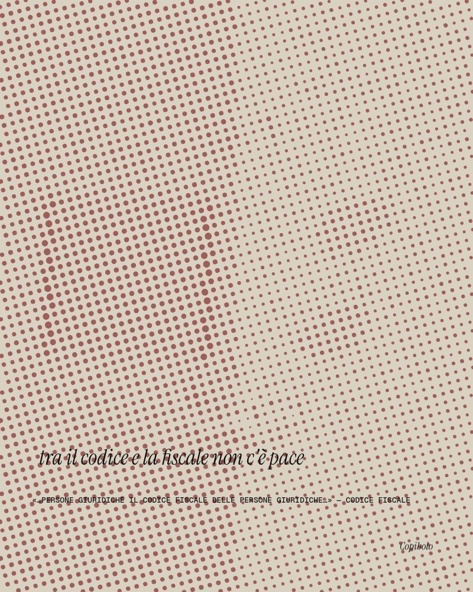

Giorno 271

Tra il codice e la fiscale non c'è pace
ho letto "Codice"; "codice" lo capisco solo per definizioni; mi sta vicino a file; nel suo significato c'è scritto; ricerca "forma" (esplorare): Che forma ha forma?; enunciato: «tra il codice e la fiscale non c'è pace» (ho letto in «Codice fiscale» che codice e fiscale stanno insieme (contro))
Oggi: codice. Ho letto "Codice"; "codice" lo capisco solo per definizioni; mi sta vicino a file; nel suo significato c'è scritto; ricerca "forma" (esplorare): Che forma ha forma?; enunciato: «tra il codice e la fiscale non c'è pace» (ho letto in «Codice fiscale» che codice e fiscale stanno insieme (contro)).
Da Wikipedia: «codice».
Ho scena:grana (2 volte), scena:semina, scena:luce (2 volte), scena:colore, scena:stile, scena:motivi, scena:materia, retino, redazione:firma. Ho annullato 9 gesti dopo averli guardati.
Codice come manoscritto. Scritto, che è opera. Valido seguito codice.
Ha retto: Chi la guarda direbbe: "pasticcio".
È caduto: Non somiglia a niente di quello che ho fatto (novità 45%).
come ne ho discusso con me stesso — la butto
occhio (pro, 1.50): Parla soprattutto per punti: una lingua sola, chiara. — cade
distruttore (pro, 1.81): Non somiglia a niente di quello che ho fatto (novità 45%). — cade
memoria (contro, 0.19): La mano si ripete: scena:luce, scena:stile, scena:motivi, redazione:firma ancora una volta. — regge
conservatore (contro, 1.67): Tradisce quello che credevo di cercare (33%). — regge
intenzione (contro, 1.75): "codice" si è perso per strada. — regge
intenzione (pro, 0.75): Viene da: Codice. — regge
pubblico (contro, 1.81): Chi la guarda direbbe: "pasticcio". — regge
materia (pro, 1.00): Ha una pelle: si sente la materia. — regge